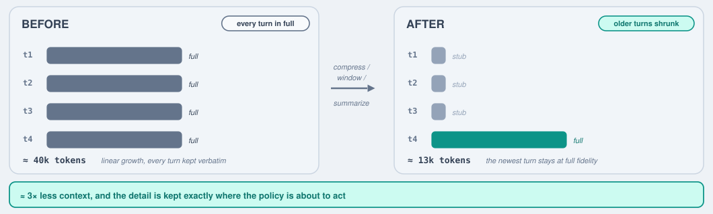

Single-Turn and Multi-Turn RL for Kernel Optimization #
Section 3.2 set up reinforcement learning for kernels in its simplest form. This section situates that setup on a spectrum, from single-turn to multi-turn RL, and develops the machinery that trains a policy to refine over turns. Section 2.1 already introduced sequential refinement as an inference-time depth axis, running a fixed policy over feedback-conditioned turns; here the concern is the complementary one of using RL to train a policy that refines well, which raises its own trajectory objective, context-management, and credit-assignment questions.
Single-turn RL: one attempt per task #
![What single-turn RL throws away. On the left one kernel of about 400 tokens, seven lines, of which exactly one is a bug: the variance is summed in fp16 instead of fp32. In the middle everything the environment measured — compile ok, correctness failed with max absolute error 3e-1 at row 4095, runtime 41 microseconds against a 74 microsecond reference, memory bandwidth utilization 63 percent, model flops utilization 21 percent, DMA stall 12 percent, occupancy 50 percent, 8 register spills, and the launch config. On the right all of that collapses into a single scalar, r equals minus 0.5, which is then pushed back identically into every one of the 400 tokens. One bad line out of seven, all seven get the same score; the rich line-level diagnostics are dropped the moment r is computed.](part3-fig-single-turn-loss.svg)
Everything the environment measured collapses into one scalar \( r \) that is pushed back identically into all ~400 tokens, so the single buggy line and the six good ones receive the same score.
In the single-turn setting of Section 3.2, the policy gets exactly one attempt at each task: given a prompt \( x \) it samples a kernel \( y \sim \pi_\theta(\cdot \mid x) \) , the environment returns a single terminal reward \( r(x, y) \) (compile, check, time), and a policy-gradient step follows. It is simple and effective, and it is the foundation the multi-turn case extends. Its limitation is that it discards information: when a kernel fails to compile or runs slowly, the concrete evidence of why, the compiler diagnostic, the failing test, the profile, is thrown away, and the next sample starts from scratch rather than from that feedback. A second, subtler limitation is internal to each attempt: the environment returns one scalar for the whole response, so the reward cannot say which part of a long generation earned it. A response that reasons out a genuinely fast strategy but then commits a single low-level indexing error is scored the same as one whose approach was wrong throughout, and the good reasoning is penalized along with the faulty code. This within-response credit-assignment problem exists even for a single attempt, and the token-class decomposition discussed below is designed to address it.
Multi-turn RL #
Section 2.1 described sequential refinement as an inference-time knob: run a fixed policy over several feedback-conditioned turns, each reading the compiler error, correctness diff, or profile of the last. Multi-turn RL is the training-time counterpart, recovering the information single-turn RL throws away by training the policy to act well over those turns rather than merely running it over them. This is the standard setup for tool-use agents [6] that interleave reasoning with tool calls — issuing web searches, running code, or invoking a compiler and profiler; kernel refinement is one such case, where the tools are the compiler and the hardware (Kevin [1], CUDA Agent [3]; RAGEN/StarPO [4], Search-R1 [5]). A recurring empirical finding is that, under a fixed compute budget, investing in iterative refinement over turns outperforms drawing many independent single-shot samples, because feedback across turns is more informative than one-shot diversity [1].
![Multi-turn RL on the running RMSNorm example, with the same policy sampling at every turn. Turn one: the history is just the spec, the model sums x times x in fp16, the feedback says wrong — it needs fp32 — and the reward is 0. Turn two: the history is the spec plus turn one's kernel and its feedback, the model switches to fp32, the feedback says correct but slow at 0.8 times, and the reward is still 0. Turn T: the history carries turn two as well, the model enlarges BLOCK_N, the feedback says correct at 1.8 times, and the reward is 1.0. The feedback from each turn is what conditions the next. The whole trajectory is then optimized as one unit: maximize the expected sum of rewards in a single GRPO step, since the turns are not independent episodes.](part3-fig-multi-turn-loop.svg)
Multi-turn RL on the running RMSNorm task. The history
\( h_t \)
grows each turn and conditions the same policy
\( \pi_\theta \)
at every turn, so each attempt starts from the last one's feedback rather than from scratch: fp16 accumulation is named as the fault and switched to fp32, which is then correct but slow, and a larger BLOCK_N finally reaches 1.8×. The rewards are outcome rewards —
\( r_t = 0 \)
until the last turn — and the whole chain is optimized as one unit, a single policy-gradient step over the trajectory rather than
\( T \)
independent episodes.
Here each turn feeds the previous attempts and their feedback back into the policy, so the model revises rather than restarts; the reward is applied once the trajectory ends (single-turn RL is just the special case \( T = 1 \) ).
Formally, write the history entering turn \( t \) as \( h_t = (x,\, y_1, f_1,\, \dots,\, y_{t-1}, f_{t-1}) \) — the prompt together with every earlier attempt and its feedback. The policy samples the next attempt from \( y_t \sim \pi_\theta(\cdot \mid h_t) \) , the environment returns feedback \( f_t \) , and the objective is the expected return of the whole trajectory \( \tau = (y_1, \dots, y_T) \) :
\[ J(\theta) = \mathbb{E}_{\tau \sim \pi_\theta}\Big[\, \sum_{t=1}^{T} r_t \,\Big], \]where \( r_t \) is the reward at turn \( t \) . In the common outcome-reward setting the environment scores only the final answer — \( r_T = r(x, y_T) \) and \( r_t = 0 \) for \( t \lt T \) — so the entire trajectory is judged by the last kernel it produces. Handing out per-turn (process) rewards instead is the alternative, and how a single terminal reward is then spread back over the turns is exactly the credit-assignment question below.
Training over multi-turn trajectories raises two recurring issues beyond the single-turn case — keeping the growing context manageable, and assigning credit across turns.
Context management #
Every turn appends the previous attempt and its (often long) feedback — compiler diagnostics, correctness diffs, full profiler dumps — to the prompt. Left unchecked the context explodes within a few turns (a handful of full reasoning traces can reach tens of thousands of tokens), so multi-turn RL borrows the standard toolkit that long-horizon agents use to keep it bounded:

Compressing the older turns to stubs while keeping the newest at full fidelity cuts the four-turn context from roughly 40k to 13k tokens, retaining the detail exactly where the policy is about to act.
- Truncation / windowing. Keep only the most recent few turns and drop older ones outright. Simplest, but on its own it discards information that later turns may still need.
- Summarization (compaction). Replace older turns — or just their verbose reasoning — with a short, model-generated summary, while keeping the durable artifacts (the kernel and its evaluation result). This preserves continuity far better than plain truncation and is the common choice: for example, Kevin discards each turn’s full chain-of-thought but has the model summarize the changes it made, carrying that summary plus the kernel and feedback forward (without it, the context reaches 50–100k tokens within a few turns) [1]. End-to-end summarization has also been studied as a general multi-turn-RL technique [7].
- Observation compression. Compress the tool output itself — surface the first error or the top profiler bottlenecks rather than the raw logs — since the environment’s feedback is often the bulkiest part of a turn.
- External memory / retrieval. Offload the history to an external store and retrieve only the relevant pieces on demand [8], trading context length for retrieval machinery.
These are typically cascaded — compress observations first, window next, summarize as a last resort — to preserve the state needed to make progress (the current best attempt and why it fell short) at a fraction of the token cost.
Credit assignment #
Credit assignment is a core problem in any long-horizon or multi-turn RL — for kernels, but equally for general code and math reasoning: when the reward lands only at the end of a trajectory (you must finish and run a kernel to score it), that terminal signal has to be propagated back to the tokens, turns, and decisions that actually earned it. The main design axis is the granularity of the attribution, from finest to coarsest:
![Three granularities of credit assignment on the same three-turn trajectory, whose outcome rewards are 0, 0 and 1.0 — so the reward lands only on the last turn. Trajectory level: one advantage of plus 1.0 for the whole chain, so the wrong fp16 turn is reinforced exactly as much as the turn that fixed it. Turn level: the discounted reward-to-go G is 0.81, 0.90 and 1.00, standardized over the group to give advantages of plus 0.8, plus 1.0 and plus 1.1 — which credits the turn that actually helped. Token level: one advantage per token, so the phrase in fp32 inside turn two carries 0.9 while its neighbours carry almost nothing; the most informative and the costliest, since it needs Monte-Carlo rollouts or a process reward model.](part3-fig-credit-ladder.svg)
The three granularities on one three-turn trajectory rewarded only at the end: the trajectory-level advantage reinforces the faulty fp16 turn as much as the turn that fixed it, the turn-level reward-to-go separates them, and the token level pins the credit on the phrase in fp32 itself.
- Token-level. The finest grain assigns credit per token, by estimating each step’s value with Monte-Carlo rollouts [11] or with a learned process reward model that scores intermediate steps, trained on human step labels [12] or on automatically generated ones [13]. It is the most informative but far the most expensive, and seldom needed for kernels.
- Turn-level. Each turn gets its own advantage, usually from a reward-to-go — a discounted sum of the current and future turns’ rewards, \( G_t = \sum_{l \ge 0} \gamma^l\, r_{t+l} \) — combined with a value baseline, most commonly via generalized advantage estimation [9], so an early revision that enabled a later success is credited for it [1, 2, 3]. A related concern is de-biasing the baseline: the standard fix is a leave-one-out estimate that excludes a sample from its own baseline [10], which Dr. Kernel [2] extends to the turn level.
- Trajectory-level. The coarsest grain gives every turn of the trajectory the same single advantage — one score for the whole multi-turn rollout — which is simplest and lowest-variance but cannot tell which turn (let alone which step) actually earned the reward. Turn-level is exactly this signal subdivided per turn.
Finer credit assignment lowers the variance of the learning signal but adds cost and its own estimation error, so kernel systems in practice sit mostly at the turn levels.
A second axis: attribution by token class. The granularity ladder above subdivides a trajectory temporally, by token, by turn, or as a whole. An orthogonal move is to subdivide a single response by the role of its tokens. TritonRL’s hierarchical reward decomposition (HRD) [14] does this for kernels: it splits one response into a high-level planning span (the reasoning trace) and a low-level coding span (the emitted kernel) and gives each span its own reward and its own group-relative advantage, rather than one scalar for the whole response. Because it decomposes a single response, it applies even to a single attempt (TritonRL is single-turn) and sits off the token/turn/trajectory ladder rather than at a point on it, directly addressing the within-response credit problem noted at the start of this section.
![Attribution by token class, TritonRL's hierarchical reward decomposition. It is a different cut from the credit-assignment ladder above: that ladder splits a trajectory by time (token, turn, trajectory), whereas this splits one response by the role of its tokens. One response is divided into a planning span (the reasoning trace) and a coding span (the emitted kernel), each with its own group-relative advantage; the two spans are rewarded asymmetrically, the plan tokens receiving the speedup reward and the code tokens the correctness reward, because the code is written conditioned on the plan so charging the code for a slow plan would punish a faithful build of a bad strategy. Rewarding both spans for speedup instead lowers the match-or-beat rate from 36 to 33 percent. The two spans co-evolve under one weighted objective, J of theta equals the expectation of alpha times J-plan plus J-code, with alpha around 0.1.](token_class_attribution.svg)
Attribution by token class. The credit-assignment ladder above cuts a trajectory by time ( \( \text{token} \to \text{turn} \to \text{trajectory} \) ); HRD instead cuts a single response by the role of its tokens — a planning span and a coding span, each with its own group-relative advantage. The mapping is deliberately crossed: the plan takes the speedup reward and the code the correctness reward, since the code is written conditioned on the plan, so charging the code for a slow plan would punish a faithful build of a bad strategy. Rewarding both spans for speedup instead drops the match-or-beat rate \( 36\% \to 33\% \) . The two spans co-evolve under one weighted objective with \( \alpha \approx 0.1 \) .
The two spans are rewarded asymmetrically (Section 3.4): the plan tokens receive the speedup reward and the code tokens the correctness reward. The asymmetry is deliberate. Because the code is written conditioned on the plan, charging the code for a slow plan would punish a faithful implementation of an inherently suboptimal strategy, so correctness-only on the code decouples that confound while the speedup pressure lands on the plan, where the strategy is actually chosen. Rewarding both spans for speedup instead lowers the match-or-beat-reference rate from 36% to 33% on single-operator tasks [14]. The two spans then co-evolve under one weighted objective,
\[ \mathcal{J}(\theta) = \mathbb{E}\big[\, \alpha\, \mathcal{J}^{\text{plan}}(\theta) + \mathcal{J}^{\text{code}}(\theta) \,\big], \]where \( \mathcal{J}^{\text{plan}} \) and \( \mathcal{J}^{\text{code}} \) are group-relative objectives computed over the plan and code tokens respectively, and the weight \( \alpha \) sets how fast the planning policy updates relative to the coding policy. A large \( \alpha \) near 1 lets the plan shift faster than the code can stabilize against, while \( \alpha = 0 \) freezes the plan; a small value ( \( \alpha \approx 0.1 \) ) works best, letting the plan drift slowly enough for the code policy to keep pace.
References #
- C. Baronio, P. Marsella, B. Pan, S. Guo, and S. Alberti. Kevin: Multi-Turn RL for Generating CUDA Kernels. arXiv:2507.11948, 2025. arxiv.org/abs/2507.11948
- W. Liu, J. Xu, Y. Li, L. Zheng, T. Li, Q. Liu, and J. He. Dr. Kernel: Reinforcement Learning Done Right for Triton Kernel Generations. arXiv:2602.05885, 2026. arxiv.org/abs/2602.05885
- W. Dai, H. Wu, Q. Yu, et al. CUDA Agent: Large-Scale Agentic RL for High-Performance CUDA Kernel Generation. arXiv:2602.24286, 2026. arxiv.org/abs/2602.24286
- Z. Wang, K. Wang, Q. Ma, et al. RAGEN: Understanding Self-Evolution in LLM Agents via Multi-Turn Reinforcement Learning (StarPO). arXiv:2504.20073, 2025. arxiv.org/abs/2504.20073
- B. Jin, H. Zeng, Z. Yue, et al. Search-R1: Training LLMs to Reason and Leverage Search Engines with Reinforcement Learning. arXiv:2503.09516, 2025. arxiv.org/abs/2503.09516
- A Practitioner’s Guide to Multi-turn Agentic Reinforcement Learning. arXiv:2510.01132, 2025. arxiv.org/abs/2510.01132
- Scaling LLM Multi-turn RL with End-to-end Summarization. arXiv:2510.06727, 2025. arxiv.org/abs/2510.06727
- C. Packer, S. Wooders, K. Lin, et al. MemGPT: Towards LLMs as Operating Systems. arXiv:2310.08560, 2023. arxiv.org/abs/2310.08560
- J. Schulman, P. Moritz, S. Levine, M. Jordan, and P. Abbeel. High-Dimensional Continuous Control Using Generalized Advantage Estimation (GAE). arXiv:1506.02438, 2015. arxiv.org/abs/1506.02438
- A. Ahmadian, C. Cremer, M. Gallé, et al. Back to Basics: Revisiting REINFORCE-Style Optimization for Learning from Human Feedback in LLMs (RLOO). arXiv:2402.14740, 2024. arxiv.org/abs/2402.14740
- A. Kazemnejad, M. Aghajohari, E. Portelance, et al. VinePPO: Unlocking RL Potential for LLM Reasoning through Refined Credit Assignment. arXiv:2410.01679, 2024. arxiv.org/abs/2410.01679
- H. Lightman, V. Kosaraju, Y. Burda, et al. Let’s Verify Step by Step (process reward models). arXiv:2305.20050, 2023. arxiv.org/abs/2305.20050
- P. Wang, L. Li, Z. Shao, et al. Math-Shepherd: Verify and Reinforce LLMs Step-by-step without Human Annotations. arXiv:2312.08935, 2024. arxiv.org/abs/2312.08935
- J. Woo, S. Zhu, A. Nie, Z. Jia, Y. Wang, and Y. Park. TritonRL: Training LLMs to Think and Code Triton Without Cheating. arXiv:2510.17891, 2025. arxiv.org/abs/2510.17891